Internacionais
Estes artistas deixaram marcas profundas no cenário mundial do Hip-Hop:
1. Tupac Shakur (2Pac)
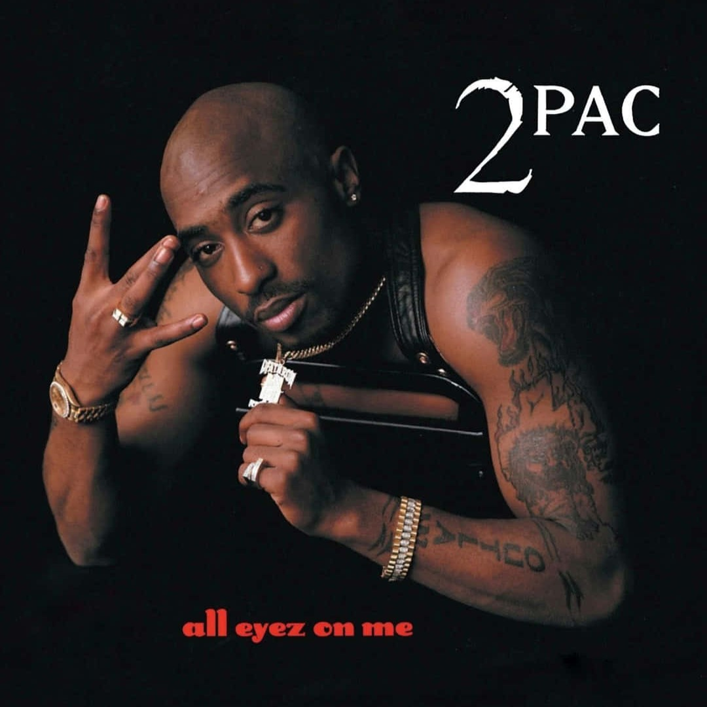
Lenda do gangsta rap, Tupac uniu agressividade e poesia em suas letras, abordando temas como racismo, pobreza e brutalidade policial. Ícone cultural, sua obra continua influenciando gerações mesmo após sua morte precoce.
2. The Notorious B.I.G.
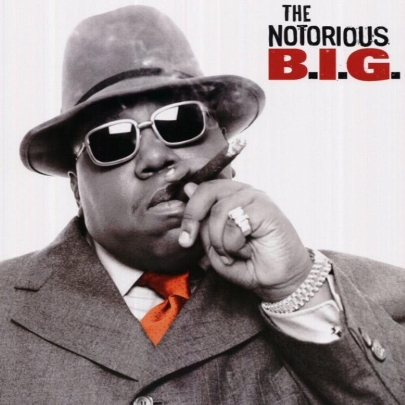
Biggie é uma das maiores vozes da Costa Leste dos EUA. Conhecido por seu flow impecável e letras detalhistas sobre a vida urbana, sua rivalidade com Tupac marcou a história do rap nos anos 1990.
3. Jay-Z
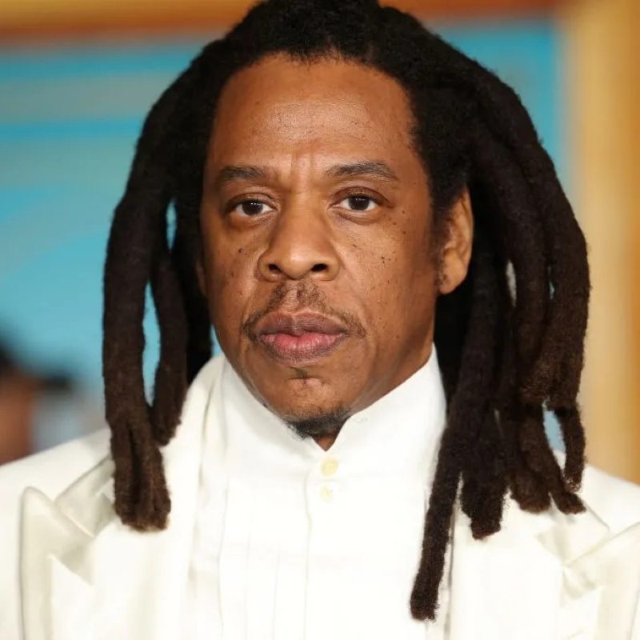
Jay-Z é um dos artistas mais bem-sucedidos da história do Hip-Hop. Seu talento lírico, visão empresarial e influência cultural o tornaram uma das figuras mais poderosas da música mundial.
4. Eminem
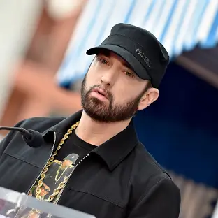
Eminem quebrou barreiras no rap ao se destacar como artista branco num gênero dominado por negros. Com rimas afiadas, storytelling marcante e personalidade intensa, tornou-se um dos maiores nomes do Hip-Hop global. Com uma grande história por trás, ele conquistou com sangue, suor e lágrimas o lugar que possui hoje.
5. Kendrick Lamar
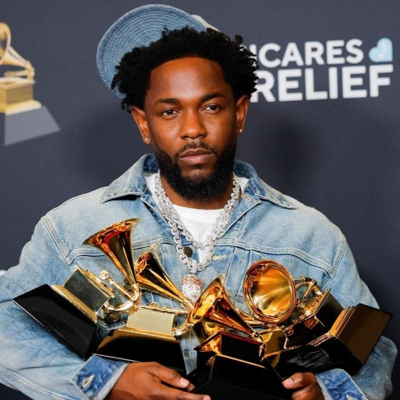
Reconhecido pela crítica e pelo público, Kendrick Lamar é uma das vozes mais impactantes do rap atual. Com letras profundas e inovadoras, aborda questões sociais, raciais e existenciais, sendo vencedor de prêmios como o Pulitzer.
6. Dr. Dre
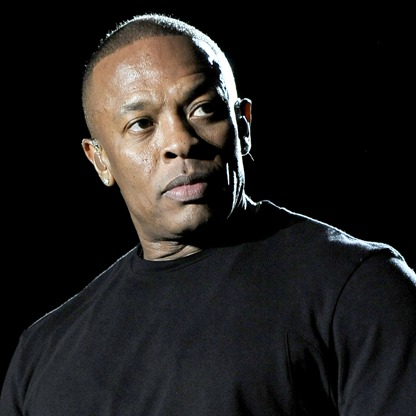
Dr. Dre é uma das figuras mais influentes do Hip-Hop. Além de rapper, é um produtor visionário, responsável por moldar o som do gangsta rap e lançar carreiras como Eminem, Snoop Dogg e 50 Cent.
7. XXXTentacion (Jahseh Onfroy)
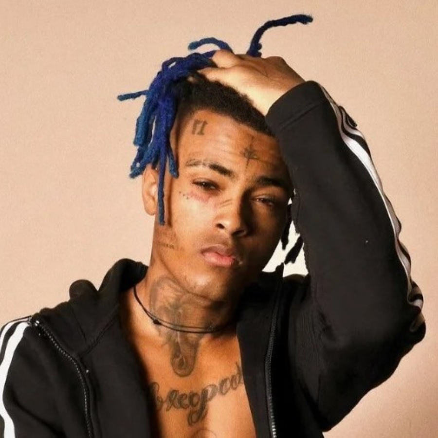
XXXTentacion foi um dos artistas mais controversos e impactantes da nova geração do Hip-Hop. Cresceu em meio a traumas familiares, episódios de violência e pobreza na Flórida. Ainda jovem, enfrentou problemas graves de saúde mental e conflitos com a lei, que marcaram sua trajetória e sua música. Com o sucesso, iniciou uma transformação pessoal, buscando terapia, pedindo desculpas publicamente pelos erros e incentivando ações solidárias, como doações a abrigos e campanhas de apoio a vítimas de violência. Sua obra, intensa e emocional, falou sobre depressão, solidão e redenção, conectando milhões de fãs que viam nele um reflexo de suas próprias lutas. Apesar das polêmicas, deixou um legado que inspira debates sobre superação, responsabilidade e a força da arte como catarse. Ele foi mais do que sua história conta, Jahseh foi e continuará sendo uma inspiração de que não importa o erro cometido, a mudança depende apenas de você!
Brasileiros
No Brasil, o Hip-Hop também tem grandes vozes e representantes culturais:
1. Racionais MC's
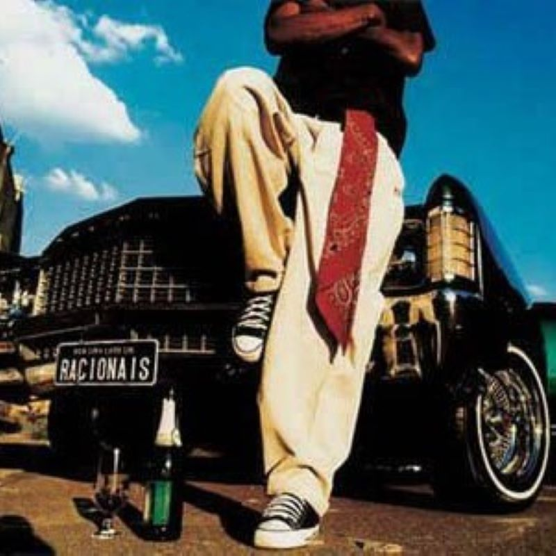
Ícone absoluto do rap nacional, o grupo Racionais MC's deu voz às periferias brasileiras desde os anos 1990. Com letras contundentes, denunciaram a violência policial, o racismo e a desigualdade social, transformando o rap em ferramenta de resistência e conscientização.
7. O Rappa
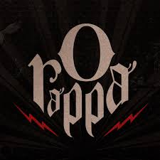
Banda que marcou a música brasileira ao unir rap, rock, reggae e elementos eletrônicos, O Rappa ficou conhecido pelas letras impactantes sobre desigualdade, violência urbana e exclusão social. À frente dos vocais, Marcelo Falcão deu voz e identidade ao grupo, com timbre único e presença marcante. Suas canções trouxeram reflexões profundas sobre a vida nas periferias, conscientização política e espiritualidade, consolidando o Rappa como um dos maiores expoentes da música de protesto no país.
2. Sabotage
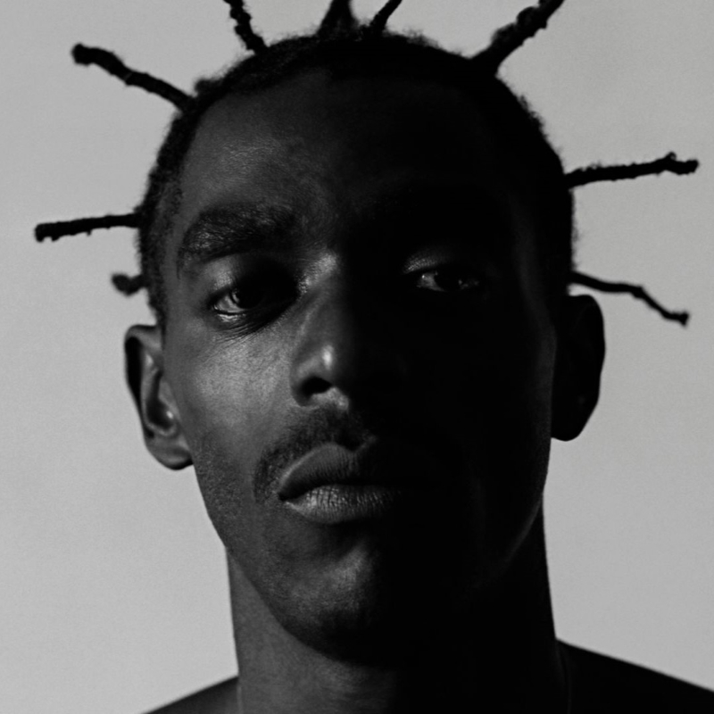
Sabotage é um dos maiores símbolos do rap brasileiro. Sua trajetória marcada pela superação e talento singular o tornou uma lenda. Suas letras abordam a realidade das favelas com poesia e verdade, conquistando respeito dentro e fora do Hip-Hop.
3. Emicida
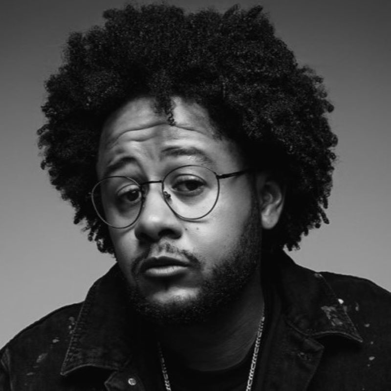
Com seu estilo lírico, político e poético, Emicida tornou-se um dos artistas mais respeitados do país. Suas letras mesclam crítica social, ancestralidade africana e reflexões pessoais. Também atua como empreendedor cultural e educador social.
4. Criolo
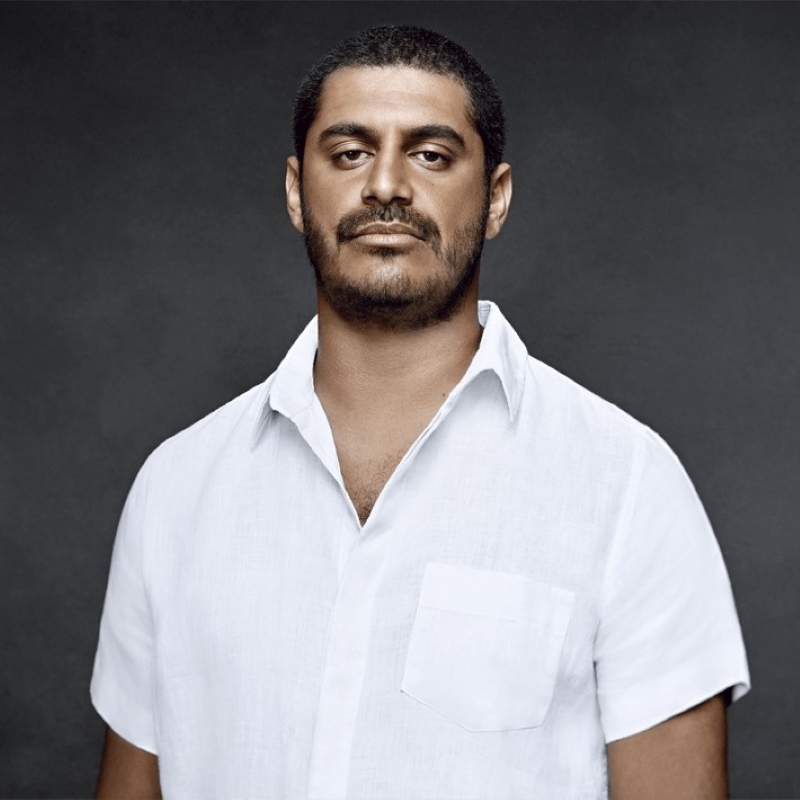
Criolo é um dos artistas mais versáteis e respeitados do rap nacional. Começou nas batalhas de freestyle e ganhou notoriedade com sua mistura de rap, MPB, samba e soul. Suas letras trazem crítica social, poesia urbana e reflexões sobre desigualdade, amor e espiritualidade. Com uma trajetória marcada por autenticidade e engajamento, Criolo tornou-se uma voz poderosa da periferia para o mundo.
5. Djonga
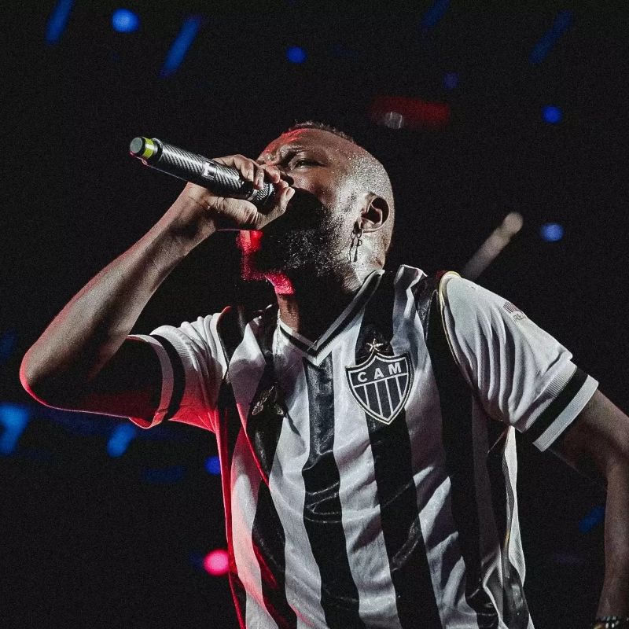
Com um discurso impactante e militante, Djonga é uma das vozes mais influentes da nova geração do rap nacional. Suas letras abordam o racismo, a vivência da juventude negra e o orgulho de suas raízes com força e autenticidade.
6. Marechal
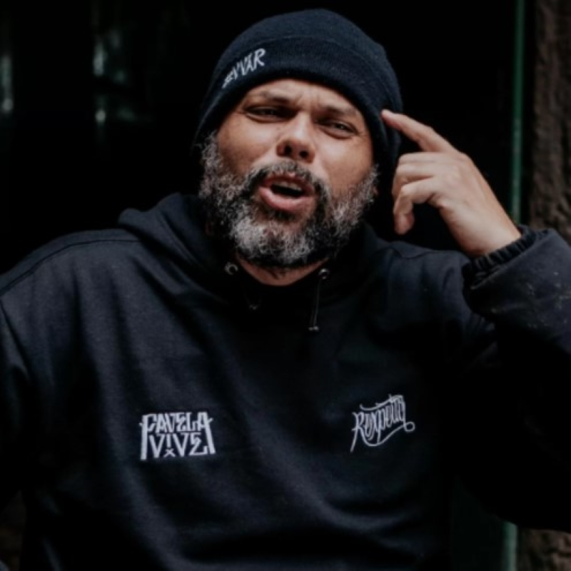
Reconhecido pela lírica afiada, Marechal é um dos pilares do rap consciente no Brasil. Com forte atuação nas batalhas de freestyle, é conhecido por sua profundidade lírica, postura ética e compromisso com a educação por meio da cultura. É fundador do projeto "Batalha do Conhecimento", que une Hip-Hop e educação nas escolas públicas.
8. Froid
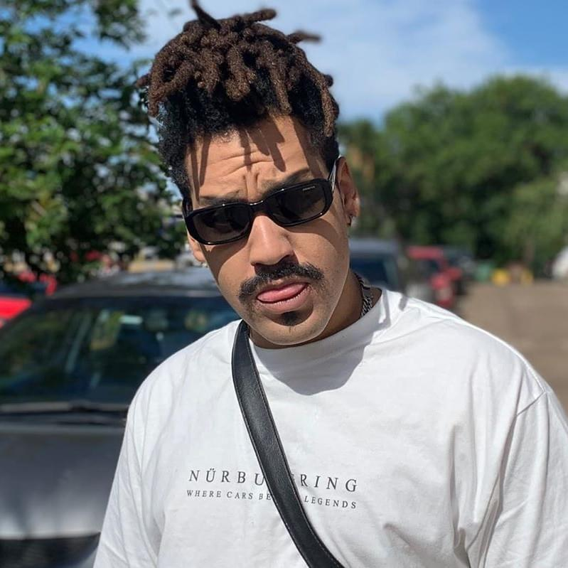
Froid é um dos nomes mais originais do rap brasileiro contemporâneo. Com rimas afiadas, críticas sociais contundentes e referências filosóficas, construiu uma identidade única no cenário. Suas letras abordam desde questões existenciais até denúncias contra hipocrisia e desigualdade, sempre com lirismo marcante e experimentações sonoras que transitam entre boom bap e trap.